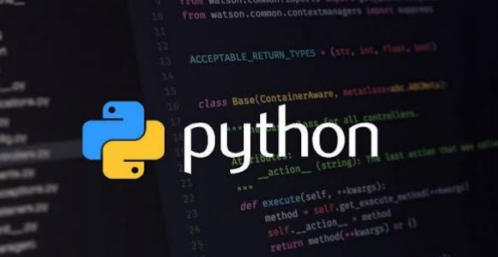

CY CERGY PARIS UNIVERSITE - License Informatique 2ème année - Chadi ALKERDI - 2023/2024

Checker & Beautifier in Java for
python language
Projet POO & Java L2-I 2023-2024

version 1.0 du 07/11/2023
Objectif
Le projet de POO - Java permet de mettre en œuvre les principaux éléments du contenu du
module dans le cadre de la conception d'une petite application. Le travail est à réaliser en binôme
(exceptionnellement seul, pour les situations particulières1
). Les binômes sont à constituer dans les
groupes de TD.
Rappel des modalités d’évaluation (M3C2
: Modalités de Contrôle de Connaissances et de
Compétences) :
le module de POO-Java est en Contrôle Continu Intégral (CCI) : le projet compte pour 1/3
de l'évaluation de l’UE « POO / Java » (+1/3 CC + 1/3 exam.). Comme pour la partie CC, il
n'y a pas de seconde session pour le projet et la note obtenue est reportée en session 2.
Contexte du projet
On s’intéresse dans ce projet à la qualité des codes python (fichiers d’extension « .py ») en
particulier pour les aspects de typage et de commentaire des codes. L’application à réaliser doit
donc aider le développeur python dans ces 2 axes. (tous les exemples de codes python sont issus
d’exercices proposés au premier semestre de L1 MIPI afin de faciliter la compréhension du contexte
du projet).
Premier axe : le typage
On prend comme exemple les différentes versions d’un même code python (toutes les versions
sont exécutables : on ne s’intéresse pas dans ce projet aux erreurs de syntaxe3
).L’application devra donc aider le développeur à renforcer son code en l’incitant à utiliser les
annotations de type : pour cela il sera nécessaire de détecter l’absence des annotations de type dans
les codes sources python.
Second axe : les commentaires de documentation : « doc
strings »
Pour cela, une partie des commentaires de documentation peut être automatisée, en particulier les
deux premières lignes de « déclaration » du langage4
et de l’encodage, ainsi que le squelette du
commentaire de fonction au format « pydoc » (aussi appelé « doc strings »).
Ce type de commentaires permet ensuite de générer une documentation au format HTML, tout
comme la javadoc en Java (les tags sont majoritairement identiques en python et en Java :
@version, @author, @param, @return, @see). Le fichier source complet ainsi qu’une capture
d’écran du résultat obtenu est fourni en complément de ce sujet. Mais il n’est pas demandé dans le
projet de générer les fichiers HTML, uniquement de préparer les fichier python avec un squelette de
commentaire « pydoc ».
Complétude et qualité du projet : 7 points (fichier « readme.md », code java, javadoc, fichiers jar).
Livrables à déposer sur la plate-forme pédagogique avant le ven. 29 déc. 23.
- Fichier « readme.md » contenant les noms, prénoms, groupe TD des membres du projet ainsi que les informations spécifiques utiles.
- Rapport de projet (minimum 5 pages, maximum 10 pages) : 3 points (le fond et la forme seront évalués). Les deux fichiers suivants sont à rendre :
- Le document de traitement de texte (docx ou odt10)
- La version PDF de votre rapport
- Ensembles des fichiers sources du projet (.java)
- La javadoc
- Les deux fichiers jar en version compatible Java SE 17 (LTS)
IMPORTANT : Tous les fichiers et sous-dossiers à remettre doivent être placés dans un répertoire unique portant les deux noms du binôme (sous la forme NOM1_NOM2), à compresser en un seul fichier au format zip qui sera déposé sur la plate-forme pédagogique de cours (moodle).